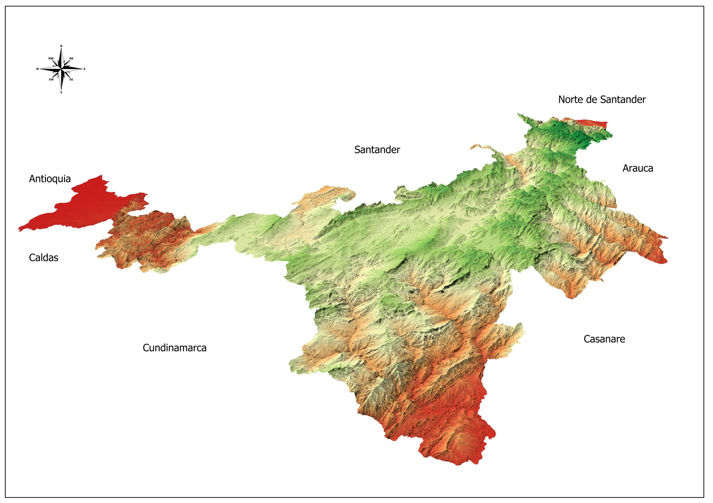
Boyacá DEM
Physical-territorial analysis and relief representation
Portfolio SIG
Socio-environmental Researcher | GIS, Thematic Cartography, and Territorial Analysis
I produce maps and spatial outputs that make territory readable, communicable, and analytically useful. My work supports indigenous territorial processes, socio-environmental research, environmental diagnostics, and institutional decision-making in Colombia.
I work at the intersection of geospatial analysis, thematic cartography, and territorial interpretation. The portfolio below brings together selected projects in indigenous land mapping, social cartography, spatial organization of information, and environmental mapping.
These projects reflect a consistent line of work: turning complex territorial information into clear cartographic products that are useful for research, governance, communication, and community processes.
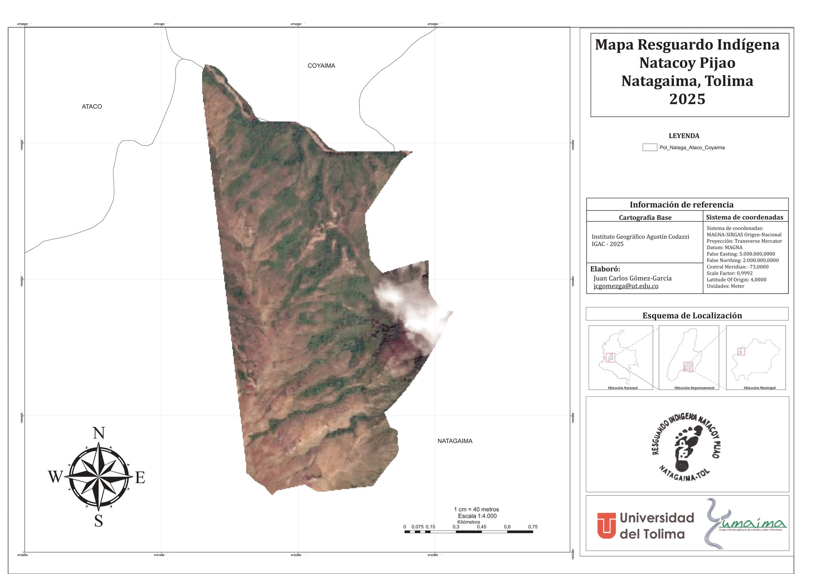
Natagaima, Tolima · 2024 · Territorial cartography and spatial delimitation
Cartographic composition developed to locate and delimit the reserve using reference cartography, coordinate grids, and satellite imagery. The map was designed to support territorial interpretation and institutional presentation, while providing a clear spatial reading of the reserve in relation to its surroundings.
Workflow: QGIS, vector editing, satellite imagery integration, cartographic layout design
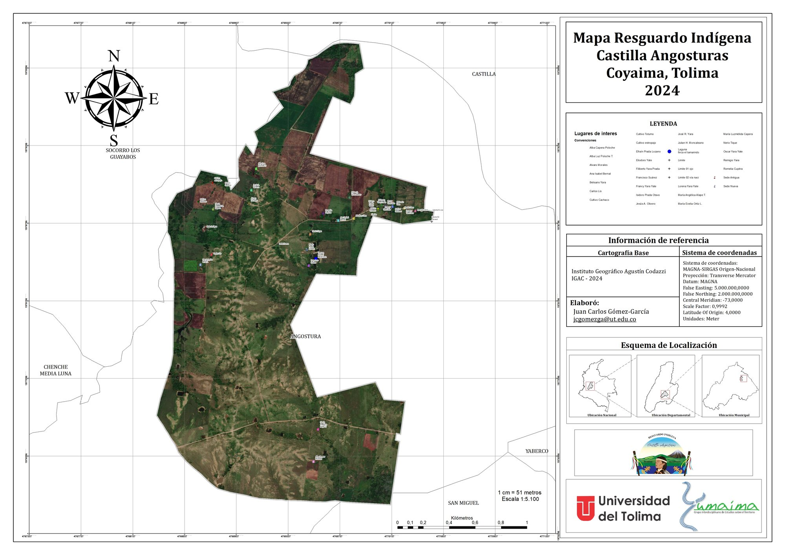
Coyaima, Tolima · 2024 · Community cartography and georeferencing
Detailed territorial map produced to represent the reserve, key reference points, and its spatial context. The composition integrates orthophoto support, thematic symbology, coordinate reference information, and an inset location map to improve spatial interpretation.
Workflow: QGIS, georeferencing, thematic symbology, multiscalar map composition
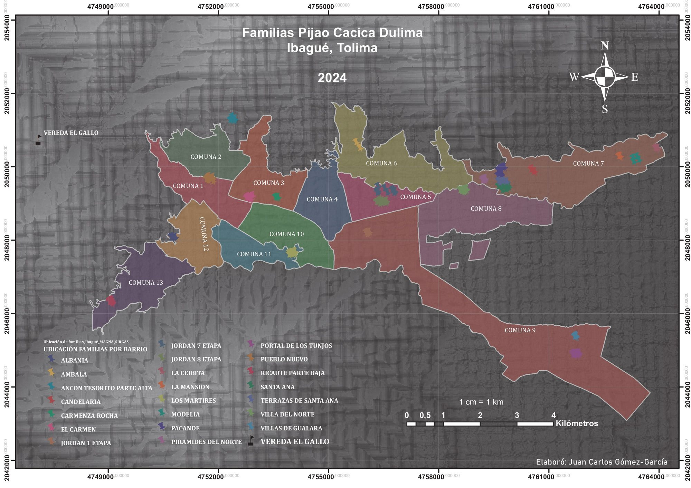
Ibagué, Tolima · 2024 · Social cartography and spatial distribution
Map developed to represent the territorial distribution of families across urban neighborhoods and rural villages in Ibagué. The output was designed as a useful spatial input for population characterization, territorial reading, and organizational processes.
Workflow: ArcGis Pro, spatial database organization, thematic representation, social cartography
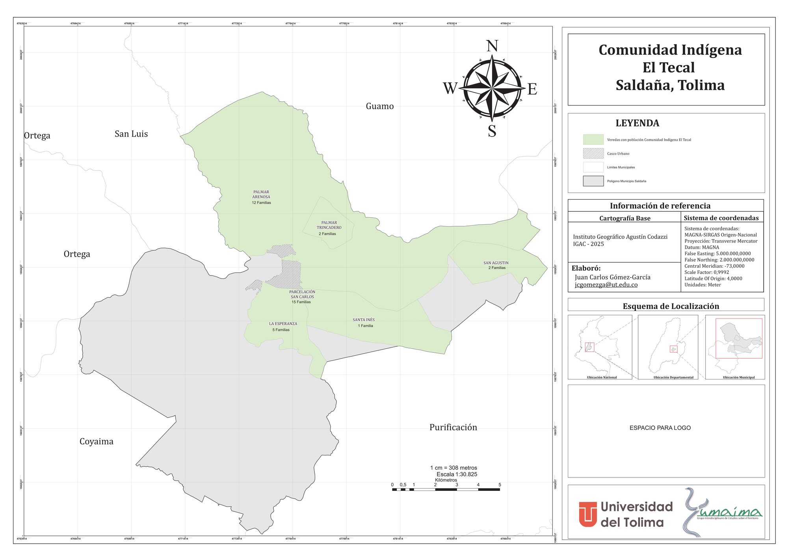
Saldaña, Tolima · 2025 · Thematic cartography and territorial organization
Thematic map showing the location of the indigenous population by village within the municipality of Saldaña. The design combines territorial information, municipal boundaries, the urban center, and locator references, with emphasis on clarity and thematic readability.
Workflow: QGIS, territorial delimitation, administrative layers, thematic map composition
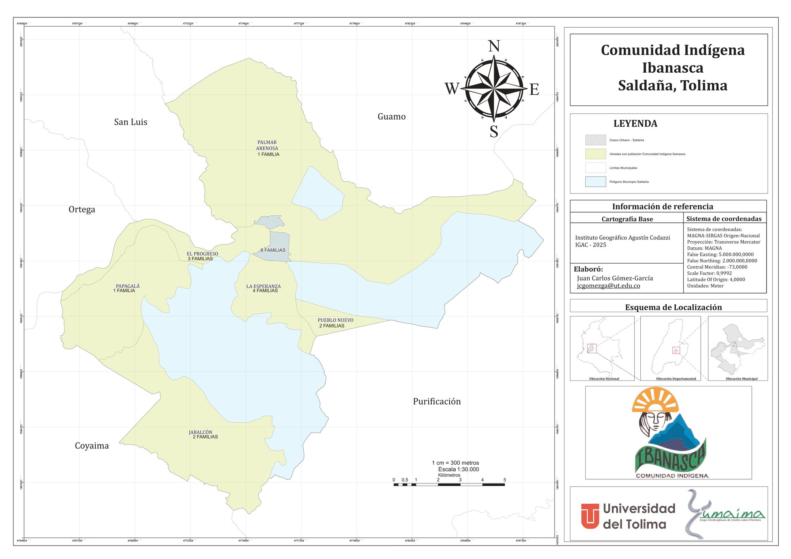
Saldaña, Tolima · 2025 · Population location mapping
Municipal-scale map created to represent the territorial location of the Ibanasca indigenous community. The layout integrates base cartography, village-level distribution, scale references, and spatial orientation elements for characterization and territorial analysis.
Workflow: QGIS, spatial data organization, thematic cartography, map layout preparation
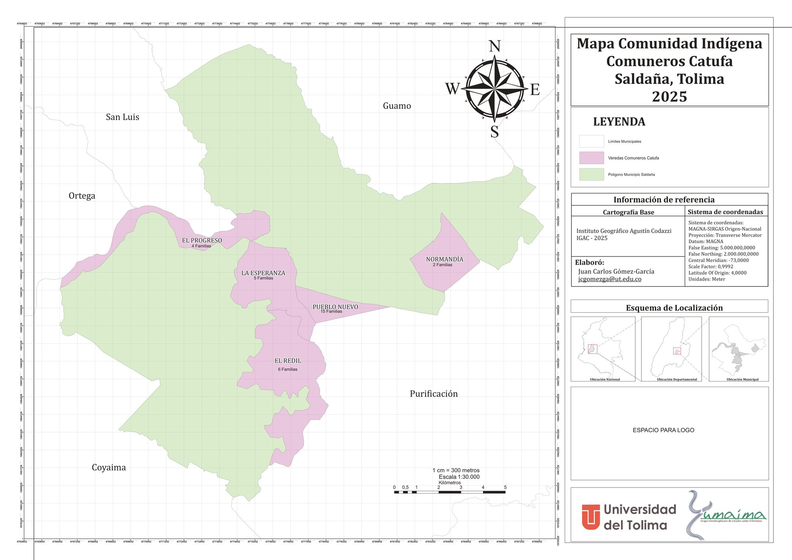
Saldaña, Tolima · 2025 · Community cartography and thematic mapping
Territorial representation of the Comuneros Catufa community, focused on the spatial distribution of population and its relationship to municipal territorial units. The final product was prepared for both technical reading and institutional presentation.
Workflow: QGIS, vector editing, cartographic composition, territorial analysis
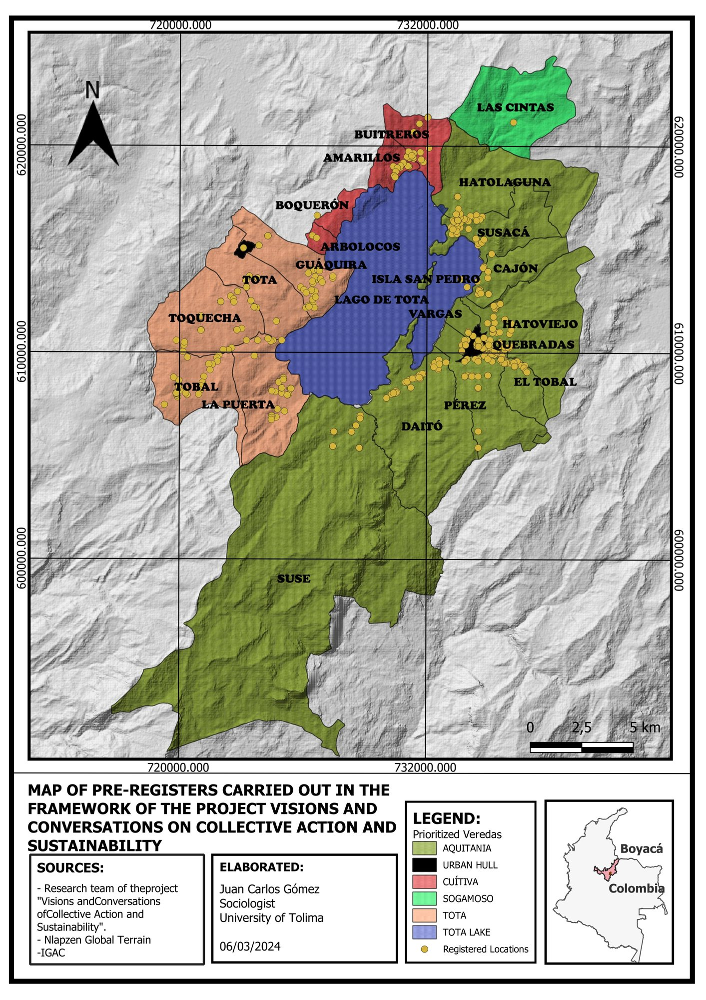
Lake Tota Basin, Boyacá · 2023 · Spatial prioritization and thematic mapping
Thematic map designed to locate prioritized sites and villages around the Lake Tota basin. The project organizes registered points and strategic territorial units into a clear visual product for analysis, communication, and territorial decision support.
Workflow: QGIS, spatial organization of records, thematic mapping, technical layout design
Beyond the featured projects, I also produce environmental, hydrographic, terrain, and precision-mapping outputs adapted to technical and institutional needs.

Physical-territorial analysis and relief representation
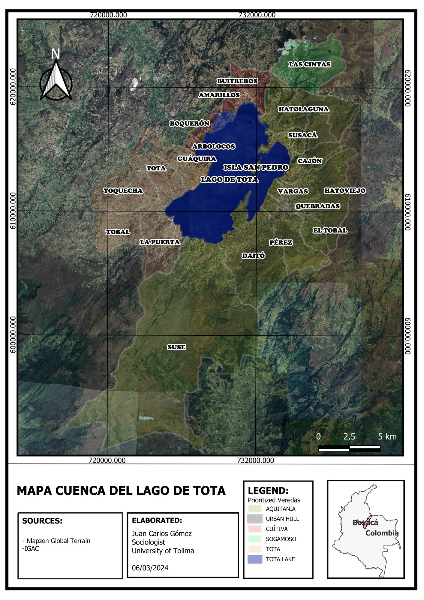
Environmental cartography and hydrographic delimitation
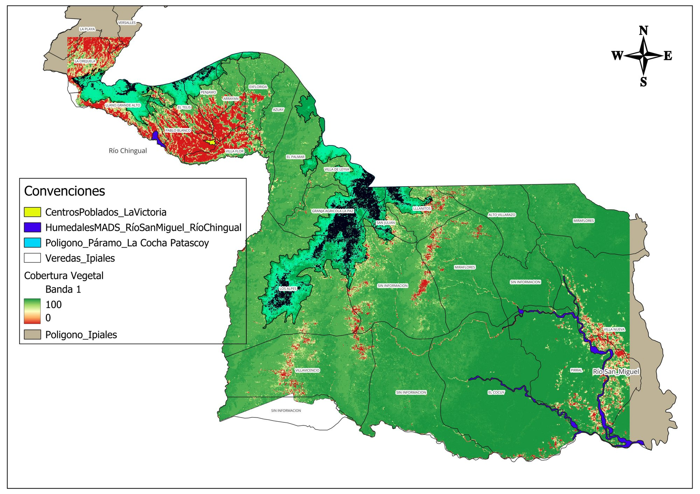
Land cover analysis and environmental mapping
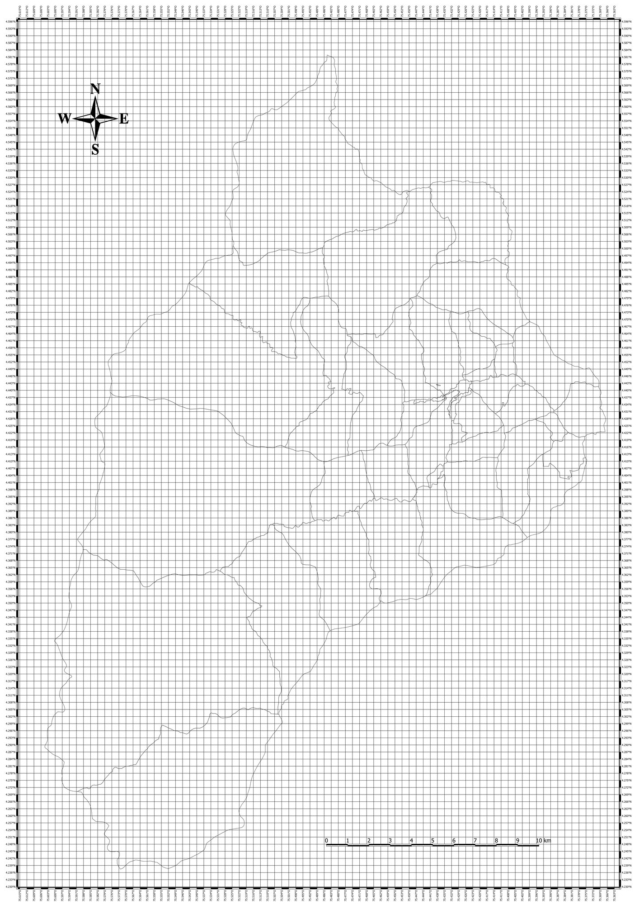
Spatial delimitation and precision mapping
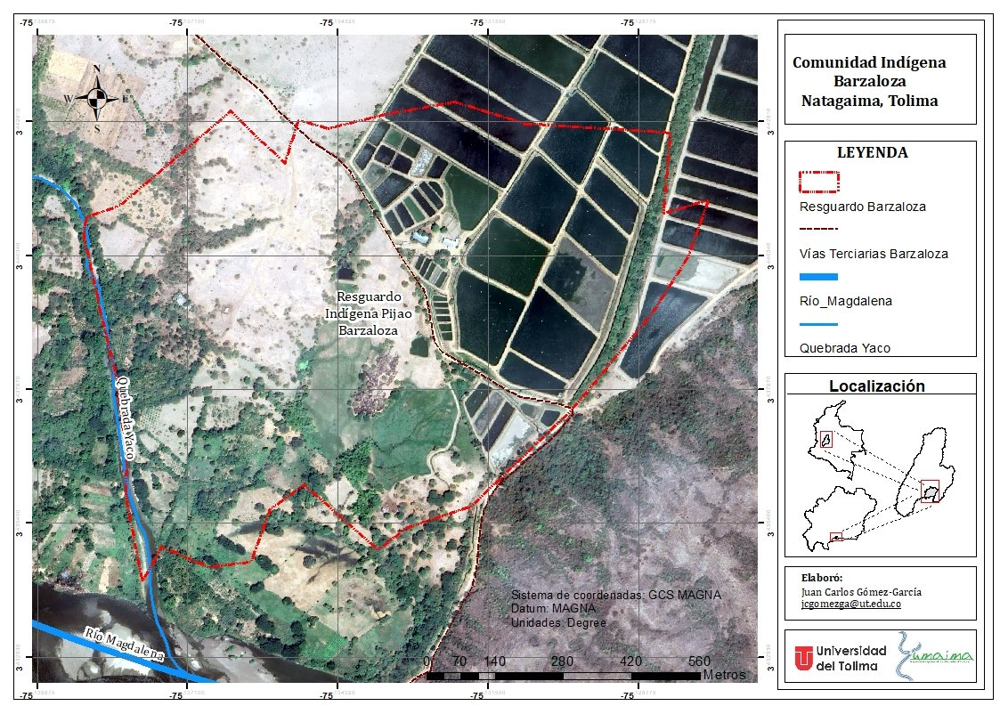
Natagaima, Tolima · 2024 · Territorial delimitation with satellite support
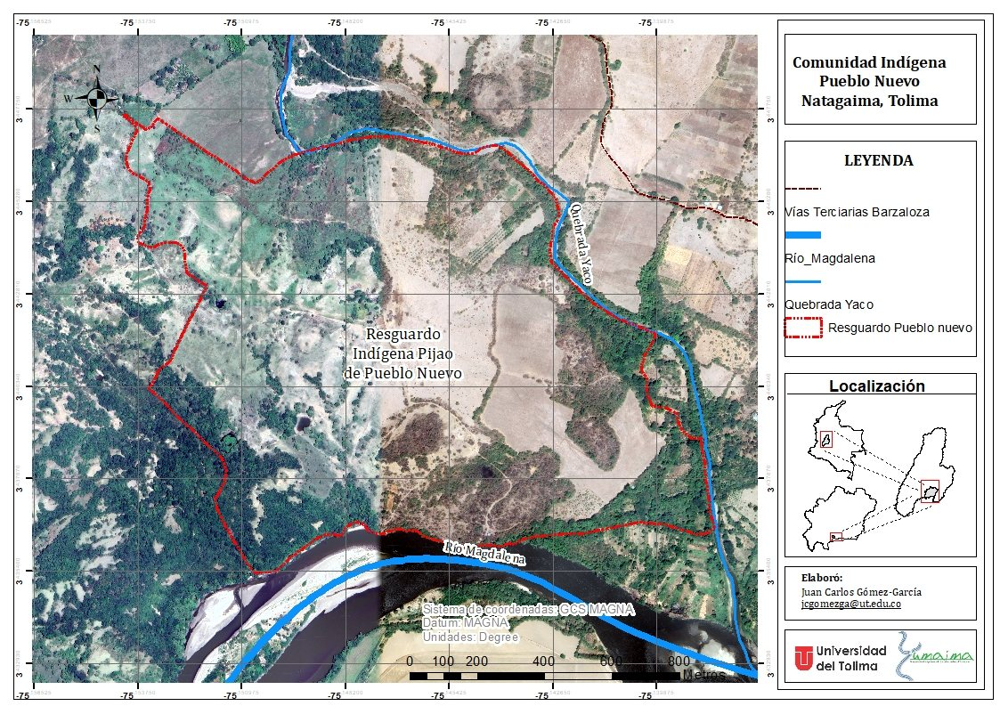
Natagaima, Tolima · 2024 · Territorial cartography, drainage, and road network
My typical workflow combines GIS-based map production, vector and raster data management, georeferencing, spatial cleaning, thematic symbology, and cartographic composition for technical, academic, and institutional use.
I also connect spatial outputs with broader socio-environmental research processes, including field data organization, territorial diagnostics, and the integration of spatial and social information.
I am available for collaborations in cartography, GIS support, territorial analysis, and map production for research projects, NGOs, foundations, public institutions, and community-based processes.